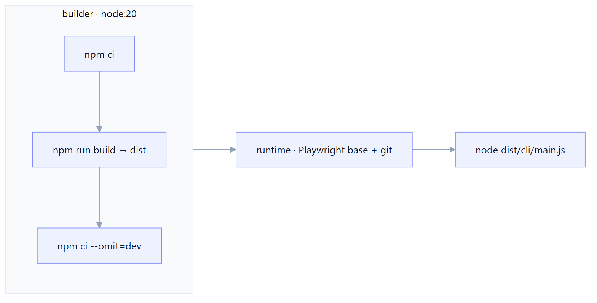
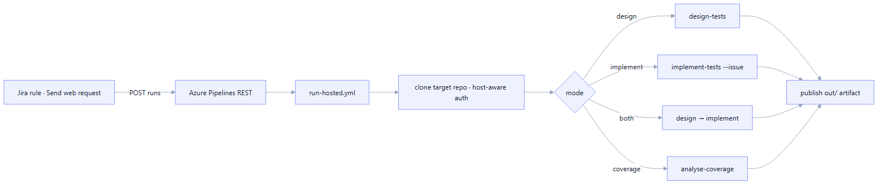

CLI, Docker & Pipeline
How you actually run Manso — the command verbs, the container image, and the Azure pipelines that let Jira automation rules drive it unattended.
CLI verb reference
A single manso binary dispatches verbs; each verb is an independently testable
run() function. Every verb supports --help.
| Verb | Purpose |
|---|---|
init | Scaffold the .agents/ folder into a target repo |
check | Score a repo's Manso readiness (0–100), CI-gateable |
fetch | Diagnostic: fetch one Jira ticket through the Context Layer |
skills | List resolved skills (packaged + repo overrides) |
design-tests | Context → design → Xray (Cucumber or Manual tests linked to the story) |
implement-tests | Implement → verify → heal → PR. --design <file> or stateless --issue <KEY> |
analyse-coverage | Assess coverage gaps, comment the analysis, create missing tests |
respond-to-pr | Act on @manso PR comments (fix / reply / propose rule) |
eval | Score golden designs against the coverage gate (release gate) |
audit | Read the append-only audit log |
Docker image
A multi-stage Dockerfile builds Manso and ships it on the Playwright base image
(Node 20 + browsers + OS deps) with git added. The code agent runs in-process via the SDKs (just an
API key), but the Playwright MCP server and the target's npm run test:ui need browsers — hence the
Playwright base, which also powers the environment-aware run (M20).
Secrets are passed at docker run time, never baked in.

GitHub Actions and Azure runtime pipelines
CI, container publishing, and package releases use GitHub Actions. Two Azure pipeline definitions remain for Jira automation triggers:
.github/workflows/ci.yml— type-checks, tests, evaluates golden cases, and publishes the main image to GHCR..github/workflows/release.yml— a manual release frommainor pushedvX.Y.Ztag publishes the npm package, GitHub Release, and versioned GHCR image.pipelines/run.yml— the Jira-triggered runner using the GHCR image.pipelines/run-hosted.yml— the same runner built from source on a Microsoft-hosted agent.
Both runners take the same parameter set (see the table below) and stay in sync; each clones
the target repo when one is supplied (host-aware auth: GitHub token or Azure PAT), runs the requested step(s),
and publishes out/ (design artifacts, audit log, cost ledger) as a pipeline artifact.
Run modes
One parameterized pipeline serves every Jira rule via the mode parameter:
| Jira rule | mode | What runs |
|---|---|---|
| Generate test cases | design | design-tests --yes → Gherkin in Xray |
| Implement automated tests | implement | implement-tests --issue … --pr (Xray-sourced) |
| Ticket Ready → handover | both | design, then implement, in one run |
| Analyse coverage gaps | coverage | analyse-coverage --comment --create-tests --yes |
Beyond mode/issueKey, the runner takes optional parameters:
| Parameter | Purpose |
|---|---|
targetRepo | Clone URL. Optional for design/coverage (run issue-only); required for implement/both. |
testFields | JSON object of project-mandatory Jira fields for created Test issues, e.g. {"customfield_15714":170}. |
reporter | Jira accountId set as Reporter on created tests — pass {{initiator.accountId}} to attribute them to the triggering QA (needs Modify Reporter permission). |
deriveRequirements · adversarialCritique · riskCoverage | M22 knobs — derived requirements, the critique pass, and the risk/edge gate (required|warn|off). Default on (gate warn); send a value to override. |
Jira automation rules
Each rule ends with a "Send web request" action calling the Azure DevOps Pipelines REST API
to queue a run. The body sets templateParameters — mode (fixed per rule),
issueKey from {{issue.key}}, and the per-project targetRepo. No webhook is
created on the Azure side — the call is outbound from Jira.
POST https://dev.azure.com/<org>/<project>/_apis/pipelines/<id>/runs?api-version=7.1
Authorization: Basic <base64(":" + PAT)>
{
"templateParameters": {
"mode": "design",
"issueKey": "{{issue.key}}",
"targetRepo": "https://dev.azure.com/org/project/_git/repo",
"testFields": "{\"customfield_15714\": 170}",
"reporter": "{{initiator.accountId}}",
"deriveRequirements": "true", "riskCoverage": "warn"
}
}docs/JIRA-AUTOMATION.md.
Auth on CI
Secrets come from a Key-Vault-backed variable group (manso-secrets) and are
mapped explicitly into each step's env (in a container job, secret variables aren't auto-exposed).
The token authenticates both the REST API and the git push, so a clean agent needs no pre-configured
git credentials. The clone step is host-aware: a GitHub targetRepo uses
GITHUB_TOKEN, an Azure one uses AZURE_DEVOPS_PAT.
setupCommand (Docker), the run is environment-aware:
it stands the app up, explores it, and verifies against it. Without Docker infra it falls back gracefully —
verify is red but the PR is still raised for human review.